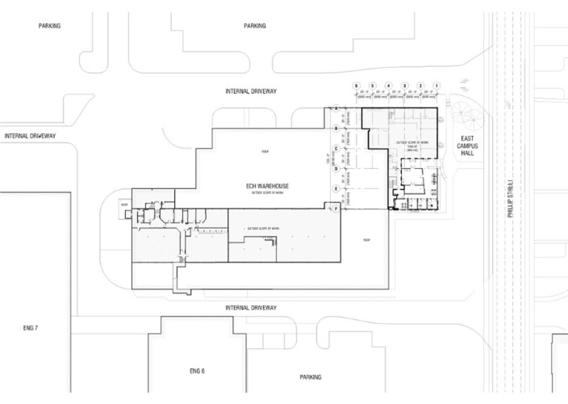
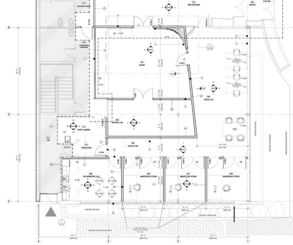
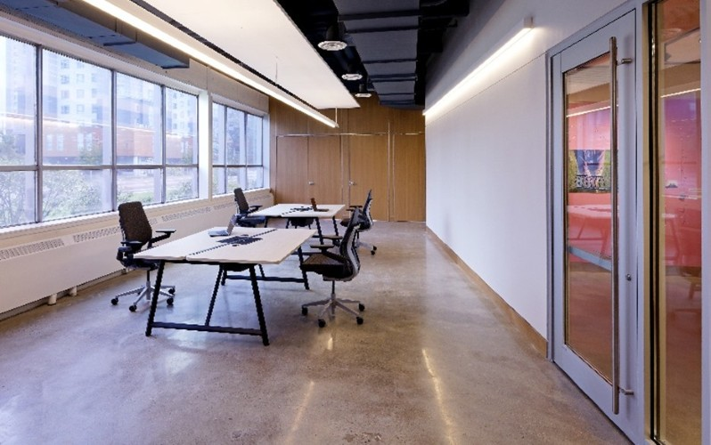
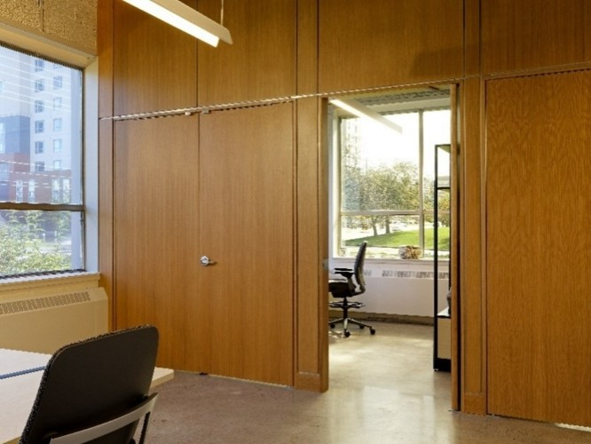
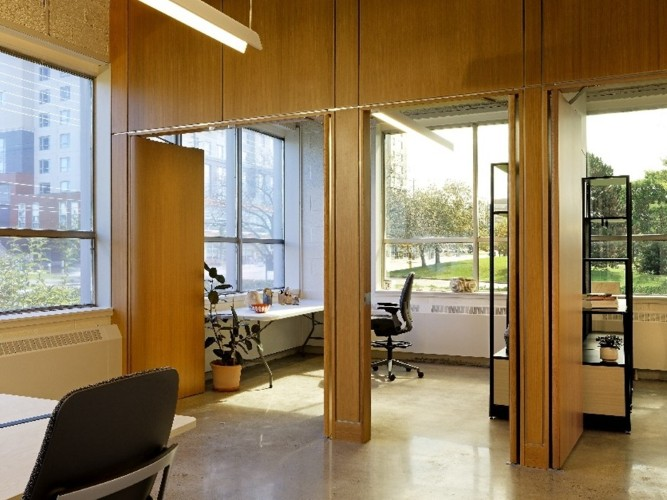

UW | Longhouse Labs Part One • Retrofit
Waterloo, ON
Longhouse Labs at the University of Waterloo is designed to foster deep relationships between the Indigenous community, contemporary artists, and institutions housing cultural belongings. The suite serves as a physical manifestation of the University’s commitment to Indigenization and Reconciliation, creating a flexible environment where Indigenous knowledge can permeate art production and pedagogy.
The architectural program intermingles studio, exhibition, and archival spaces to create a vibrant hub for creation and learning. To facilitate the borrowing of sensitive archival items from other institutions, the spaces feature a high degree of environmental control, including precise temperature and humidity monitoring.
Design elements highlight biophilic connectivity, with wood features that recall traditional forms of construction such as the Longhouse. The studios are flooded with natural light and feature flexible pivot doors that double as exhibition surfaces, allowing the workspace to expand seamlessly into the circulation areas. By design, the project embodies the traditional practice of extending the longhouse or lodge—always making room for both anticipated and unanticipated people and functions.



Entrance from Phillip Street
The renovation of East Campus Hall breathes new life into a mid-20th-century industrial volume, transforming its aging infrastructure into a welcoming, flexible exhibit space.
Dedicated to emerging First Nations and Indigenous artists, the design utilizes the building’s raw materiality as a backdrop for cultural expression.
Gallery Space
The gallery and archive space are strategically centered within the building’s interior, utilizing the surrounding floor plate as a thermal and security buffer. This 'core' placement facilitates the safe care and environmental monitoring of both created and borrowed items, ensuring that sensitive cultural artifacts are stabled within a high-performance, climate-controlled envelope.
Kitchenette
The residency suite features a compact kitchenette dedicated to the daily needs of visiting artists. Specifically designed for 'boil and reheat' operations to align with the building’s current occupancy classification, the space provides a private, functional amenity that supports long-term artistic research and residency within East Campus Hall.
Open Artist Lab Space
A dedicated digital design hub features several high-performance workstations, providing artists and visitors with the advanced tools necessary for contemporary Indigenous creation.
This open-plan zone maintains a direct visual and physical connection to the resident artist workshops, where large-scale pivot doors are frequently kept open to encourage a fluid exchange between digital modeling and physical fabrication.



Project Info
- Project Name: UW | Longhouse Labs Part One • Retrofit
- Year Completed: 2023
- Location: Waterloo, ON, Canada
- Firm: Brook McIlroy Incorporated
- Position: Project Architect/Manager